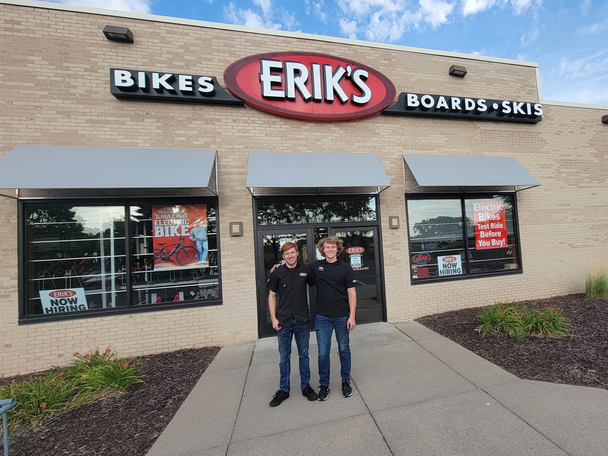
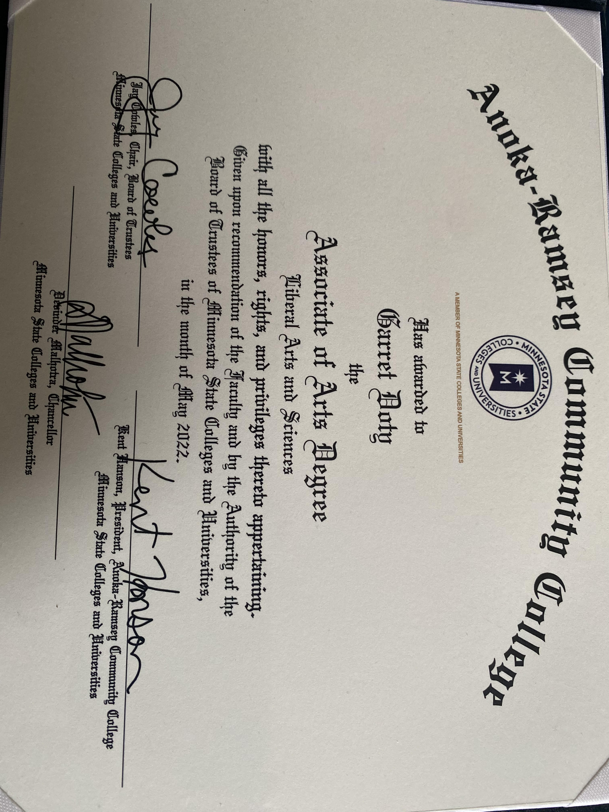
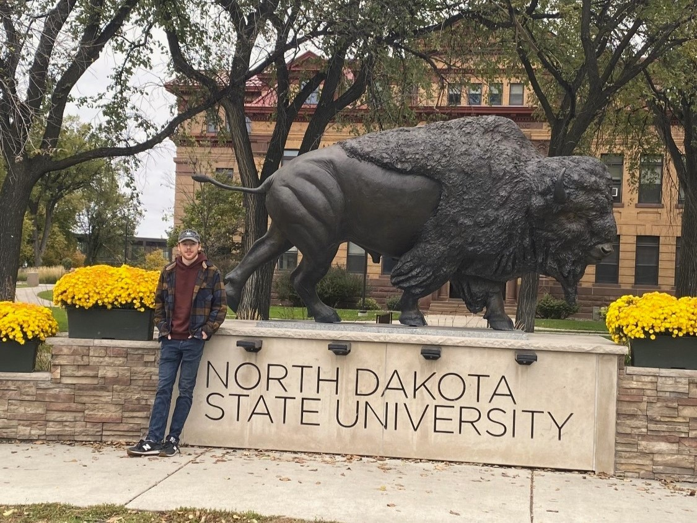
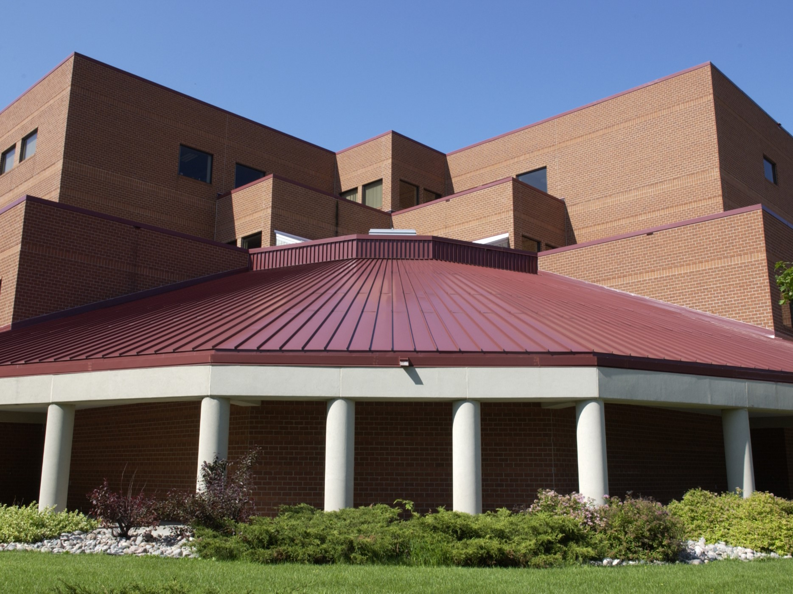

In a two-year period as Assistant Manager at Erik's Bike Shop,
this experience allowed me to gain essential soft skills pivotal to my professional career growth.
This role significantly developed my leadership, customer service, and team colaboration.
Fueled by a commitment to academic excellence, I undertook college coursework at Anoka-Ramsey while in high school,
attaining an Associate's Degree ahead of my high school graduation—reflecting my ambitious nature and ability to manage my time effectively.


My passion for problem-solving and computer programming
led me to pursue my master's degree in computer science at NDSU.
I am expected to graduate in the Spring of 2025 with a strong GPA of 3.5.
As an Undergraduate Research Assistant, I managed sensitive export-controlled material,
adhering to NDA guidelines. I actively participated in DoD cybersecurity research,
creating software solutions with C#.NET in a colarbative team environment.
